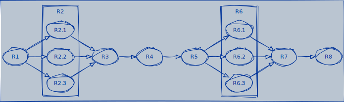

Reliability Block Diagrams
Reliability Block Diagrams (RBD) are a method for diagramming and identifying how the reliability of components (or subsystems) R(t) contributes to the success or failure of a redundancy. It is a method that can be used to design and optimize components and select redundancies, aiming to lower failure rates.
An RBD is represented as a series of connected blocks (in series, parallel, or a combination thereof), indicating redundant components, the type of redundancy, and their respective failure rates.
When analyzing the diagram, components that failed and those that did not fail are indicated. If a path can be found between the start and end of the process with components that did not fail, it can be assumed that the process can be completed.
Each RBD should include statements listing all relationships between components, i.e., what conditions led to the use of one component over another in the process execution.
RBD Implementation in Data Engineering
RBDs can be particularly useful in data engineering to ensure the reliability and availability of data pipelines and storage systems. Here's how RBDs could be applied in the context of data engineering:
Designing Data Pipelines
Data pipelines consist of various stages like data collection, processing, transformation, and loading (ETL processes). An RBD can represent each stage as a block, with connections illustrating the flow of data. This helps in identifying critical components whose failure could disrupt the entire pipeline, allowing engineers to implement redundancy or failovers specifically for those components.
Infrastructure Reliability
In data engineering, the infrastructure includes databases, servers, network components, and storage systems. An RBD can help visualize the relationship between these components and their impact on overall system reliability. For example, a database cluster might be set up with redundancy to ensure that the failure of a single node doesn't result in data loss or downtime, represented in an RBD by parallel blocks for each redundant component.
Dependency Analysis
RBDs can help data engineers understand how different data sources and processes depend on each other. For instance, if a data pipeline relies on multiple external APIs or data sources, the RBD can illustrate these dependencies, highlighting potential points of failure if one of the external sources becomes unreliable.
Optimizing Redundancies
By using RBDs, data engineers can identify areas where redundancies are necessary to maintain data availability and system performance. This is crucial for critical systems where data must be available at all times. For example, in a data replication strategy, the RBD can help determine the number of replicas needed to achieve the desired level of reliability.
Failure Mode Analysis
RBDs allow for the identification of single points of failure within the system. Understanding how individual components contribute to the overall system reliability enables data engineers to prioritize efforts in mitigating risks, such as adding backups, introducing data validation steps, or improving error-handling mechanisms.
Scalability and Maintenance Planning
As data systems scale, RBDs can be updated to reflect new components and dependencies, helping engineers plan for maintenance and scalability while minimizing the impact on reliability. This foresight ensures that the system can grow without compromising on performance or data integrity.
In summary, Reliability Block Diagrams offer a systematic approach for data engineers to design, analyze, and optimize data systems for reliability. By visualizing component dependencies and identifying critical points of failure, RBDs facilitate informed decision-making to enhance system robustness and ensure continuous data availability.
RBD Implementation in Data Reliability Engineering
While data engineering primarily uses Reliability Block Diagrams (RBDs) to design and detail the individual tasks within data pipelines, data reliability engineering adopts RBDs to assess and enhance the overall system's robustness. In the data reliability context, RBDs extend beyond the pipeline to encompass the entire data ecosystem, including data sources, storage, and processing components, focusing on how these elements collectively contribute to the system's reliability and pinpointing potential vulnerabilities that could impact data integrity and availability.
Component Identification
Start by identifying all critical components of your data ecosystem that contribute to the overall reliability of data services. This includes data ingestion mechanisms, transformation processes (like ETL/ELT jobs), data storage systems (databases, data lakes, data warehouses), data processing applications, and data access layers.
Diagram Construction
Construct the RBD by representing each identified component as a block. The arrangement of these blocks should reflect the logical relationship and dependencies between components, with connections indicating the flow of data. For example, an ETL job block might be connected to both a source database block and a data warehouse block, showing the data flow from source to target.
Reliability Representation
Assign reliability values to each block based on historical performance data, such as uptime, failure rates, or mean time between failures (MTBF). These values can be derived from monitoring and logging tools, past incident reports, or vendor specifications for managed services.
Analysis
Use the RBD to analyze the overall system reliability. This can involve calculating the reliability of serial and parallel configurations within the diagram. For serial configurations (where components are dependent on each other), the system's reliability is the product of the individual reliabilities. For parallel configurations (where components can compensate for each other's failure), the system's reliability is enhanced and requires a different calculation approach.
Identification of Weak Points
The RBD can help identify system parts that significantly impact overall reliability. Components with lower reliability values or critical single points of failure become evident, guiding where improvements or redundancies are needed.
Redundancy Planning
Based on the analysis, plan for redundancy and fault tolerance in critical components. For example, if a data storage system is identified as a weak point, consider introducing replication or a failover system to enhance reliability.
Continuous Improvement
As the data system evolves, continuously update the RBD to reflect changes and improvements. Regularly revisiting the RBD can help in maintaining an up-to-date understanding of the system's reliability and in making informed decisions about further enhancements.
Example Use Case
Imagine a data platform where raw data is ingested from various sources into a data lake, processed through a series of transformation jobs in Apache Spark, and then loaded into a data warehouse for analytics. An RBD for this platform would include blocks for each data source, the data lake, Spark jobs, and the data warehouse. By analyzing the RBD, the data reliability engineering team might find that the transformation jobs are a reliability bottleneck. To address this, they could introduce redundancy by parallelizing the Spark jobs across multiple clusters, thereby enhancing the overall reliability of the data platform.
Example Diagram

Reliability Block Diagrams offer a systematic approach to understanding and improving the reliability of data systems, making them a valuable tool in the arsenal of data reliability engineering.